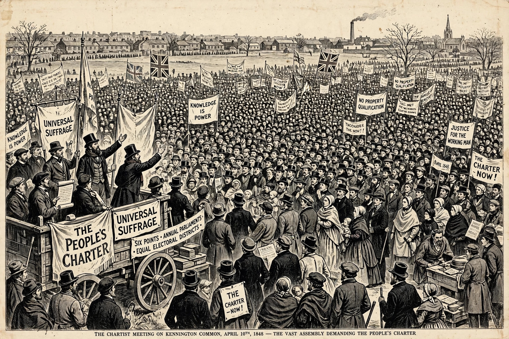

Chartism

Chartism was a working-class movement for political reform in the United Kingdom that erupted in 1838 and petered out in 1857. It took its name from the People's Charter of 1838, which set out six demands: universal male suffrage, the secret ballot, abolition of property qualifications for MPs, payment of MPs, equal electoral districts, and annually elected parliaments.
Background
The Reform Act 1832 had extended the vote to middle-class men but left working men disenfranchised, while economic depression, the new Poor Law, and factory conditions fuelled grievance. The London Working Men's Association, led by William Lovett, drafted the Charter; Fergus O'Connor's newspaper the Northern Star and giant petitions and conventions carried the movement nationally.
Course
Three great petitions (1839, 1842, 1848) bearing millions of signatures were presented to Parliament and rejected. The movement split between "moral force" advocates such as Lovett and "physical force" rhetoric associated with O'Connor. The Newport Rising of 1839, in which Chartist miners marched on Newport and were fired on by soldiers, was the most serious insurrection in mainland Britain in the 19th century. The final petition of 1848, amid European revolutions, fizzled when a planned mass meeting on Kennington Common was contained by the authorities and O'Connor's claimed signature count proved inflated.
Legacy
Although Chartism failed in its own time, five of its six points were eventually enacted: male suffrage (1867–1918), the secret ballot (1872), payment of MPs (1911), and roughly equal districts; only annual parliaments were never adopted. Historians see Chartism as a foundational movement of British labour politics.
See also: Voting rights, Australian ballot, Reform Act 1832.